Results
We have performed different goemetrical analysis and clustering methods on the loops tructure of the generated graphs by Branching-Annihilating-Random-Walker model. We need to highlight that assigning meaningful biological explanations was not the focus of this study.
In summary, we did the following improvements to the model using the concepts that we learned in this course: * Enhanced Loop Detection Algorithms * Multiscale Loop Detection WorkFlow * Statistical Analysis of Loops * Loop Structure Clustering * Geometrical Analysis of Loops
Enhanced Loop Detection Algorithm
Before, we used to generate .png images of the simulation result (see figures above) and then perform image analysis to detect loops. For instance we have convolving the image with 4-connectivity and 8-connectivity matrices to extract the graph structres present in the images. In the new approch, instead, we managed to record the structre of the network in a NetworkX datastructre. This is not easy task to perform without smart useage of the object oriented programming structure for the code. We organized our code into following classes
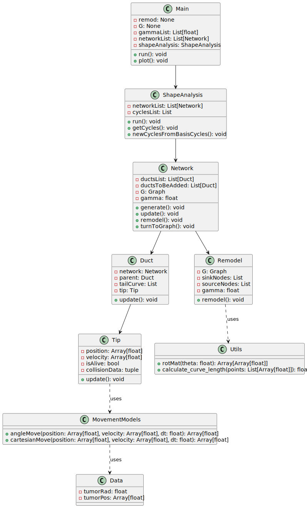
Using this structure, we can record the graph structure of the generated networks as a NetworkX dataframe. Then we can use some of the built-in functions of this library to get the loops (cycles) of the network. However, since the generated networks are large, finding all of the loops (of all scales) is computationally very costly. Instead, we first found a minimal set of cycles in the graph that forms a basis for the cycles space. I.e. we found the loops that can be combined (by symmetric difference) to generate new loops. The following figure shows the basis loops highlighted on the graph.
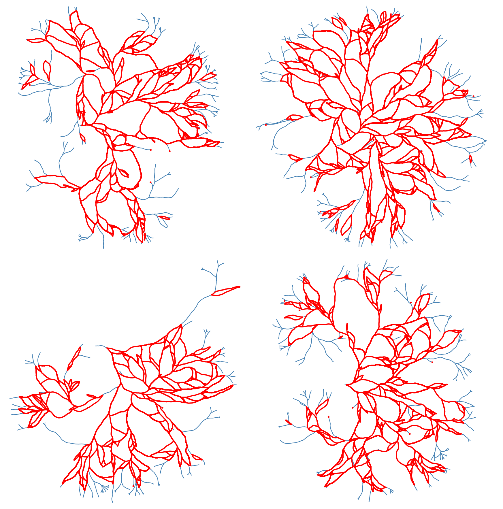
As mentioned above, detected cycles are the basis cycles. The space of all cycles in a graph form a vector space and the basis cycles is a basis for that space. In other words, these cycles are all the cycles necessary to generate all of the cycles in the graph. The addition operation between two cycles is the symmetric difference of their edge set (or XOR of their edges). We can combined the basis cycles to generate higher level (and lower level) structure as shown below.
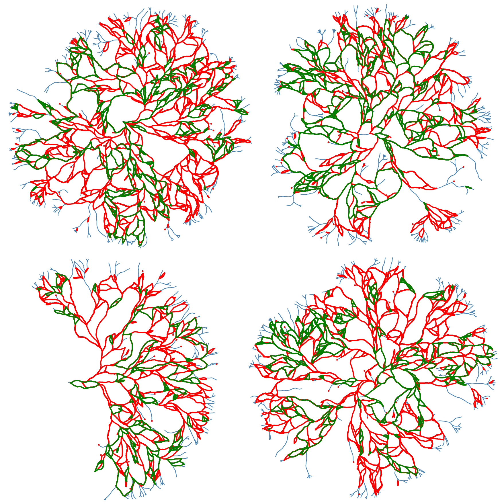
We can also extract and scale all of the loops for further analysis. The following figure shows all the loops in the network

The following figures shows some of the loop strucgures that we can get by combining the loops above.
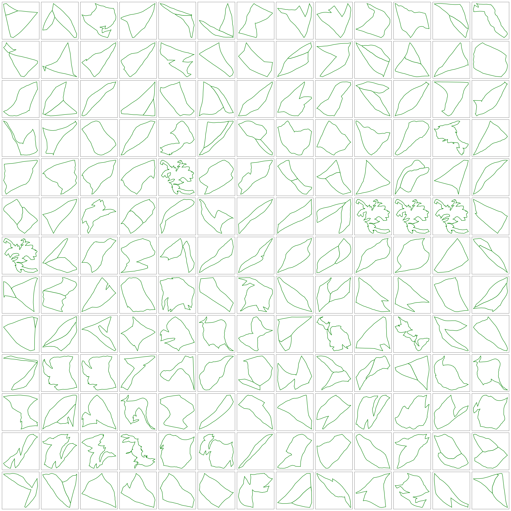
Statistical Analysis of Loops
The mechanism that generated the vascular networks is an stochastic process (Branching process + Simple Radnom Walk process + local interactions (annihilation)). So we need to use statistical notions to make some observations. In the figure below, the histogram of the cycle length is plotted. The interesting observation is the fact that the number of cycles is exponentially distributed (with respect to the Cycle length). The slope of this line (on log-log plot) can reveal some very important facts about the universality class that our model belongs to. Not only this is very interesting and important from theoretical point of view, but also it can have very useful practical applications. For instance, in comparing the simulated network with real vascualr networks, this slope can be one of the components of comparison.
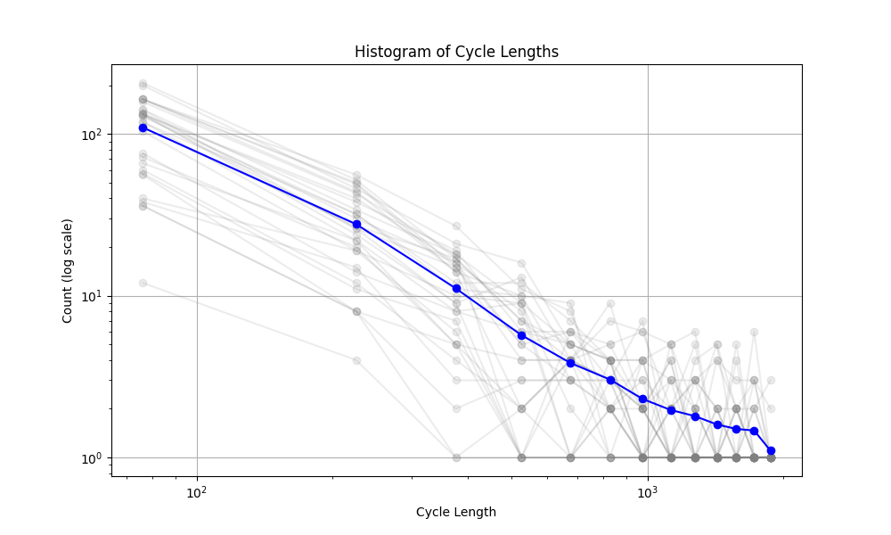
Furthremore, it is instructive to study the correlation matrix between some of the features of the loop.
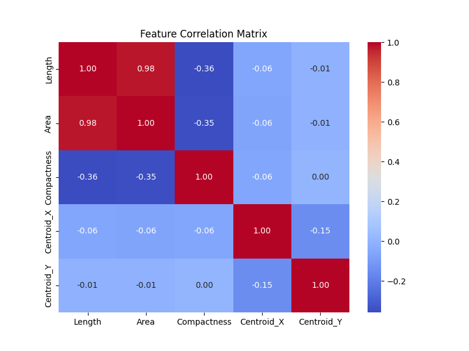
Geometric Shape Analysis: Fréchet and Hausdorff Distances
In geometric shape analysis, comparing cycles involves quantifying their similarity based on the spatial arrangement of points in each cycle. Two widely used measures for such comparisons are the Fréchet Distance and the Hausdorff Distance. These metrics provide different insights into the relationship between cycles, and their results can be visualized as heatmaps of pairwise distances.
Fréchet Distance
The Fréchet Distance between two curves $ A = {a(t) t } $ and $ B = {b(t) t } $ is defined as:
\[ d_F(A, B) = \inf_{\alpha, \beta} \max_{t \in [0,1]} \| a(\alpha(t)) - b(\beta(t)) \|, \]
where:
- $ (t) $ and $ (t) $ are continuous, non-decreasing reparameterizations of the curves $ A $ and $ B $.
- $ | | $ denotes the Euclidean norm.
- The infimum is taken over all possible parameterizations $ $ and $ $.
Interpretation of Heatmap
The heatmap for the Fréchet distance shows the pairwise distances between all cycles. Each entry $ (i, j) $ in the heatmap represents $ d_F(C_i, C_j) $, the Fréchet distance between cycle $ C_i $ and cycle $ C_j $. Key insights include:
- Small Values: Cycles with low Fréchet distances are geometrically similar in terms of overall shape and trajectory.
- Large Values: Larger distances indicate significant differences in the geometry or shape of the cycles.
The heatmap highlights clusters of similar cycles and outliers with unique geometries.
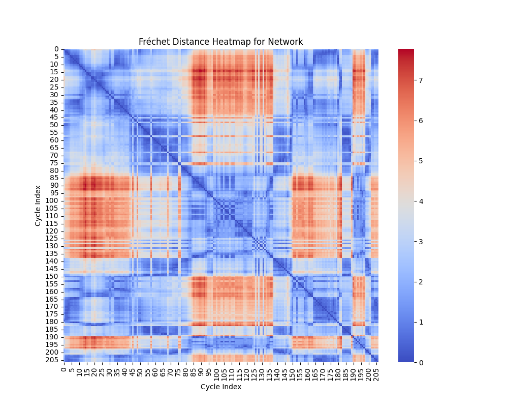
Hausdorff Distance
The Hausdorff Distance between two sets of points $ A $ and $ B $ is defined as:
\[ d_H(A, B) = \max \{ \sup_{a \in A} \inf_{b \in B} \| a - b \|, \sup_{b \in B} \inf_{a \in A} \| b - a \| \}. \]
This can be broken down into:
- $ {a A} {b B} | a - b | $: The maximum distance from a point in $ A $ to the closest point in $ B $.
- $ {b B} {a A} | b - a | $: The maximum distance from a point in $ B $ to the closest point in $ A $.
The Hausdorff distance quantifies the greatest deviation between the two sets of points, considering how well one set covers the other.
Interpretation of Heatmap
The heatmap for the Hausdorff distance shows pairwise distances between cycles. Each entry $ (i, j) $ represents $ d_H(C_i, C_j) $, the Hausdorff distance between cycle $ C_i $ and cycle $ C_j $. Key insights include:
- Small Values: Indicates that the points of one cycle are closely aligned with the points of another cycle.
- Large Values: Reflects that one cycle has points significantly farther away from the other, suggesting geometric dissimilarity.
The heatmap highlights cycles that are well-aligned (small distances) and those that are far apart in terms of shape.
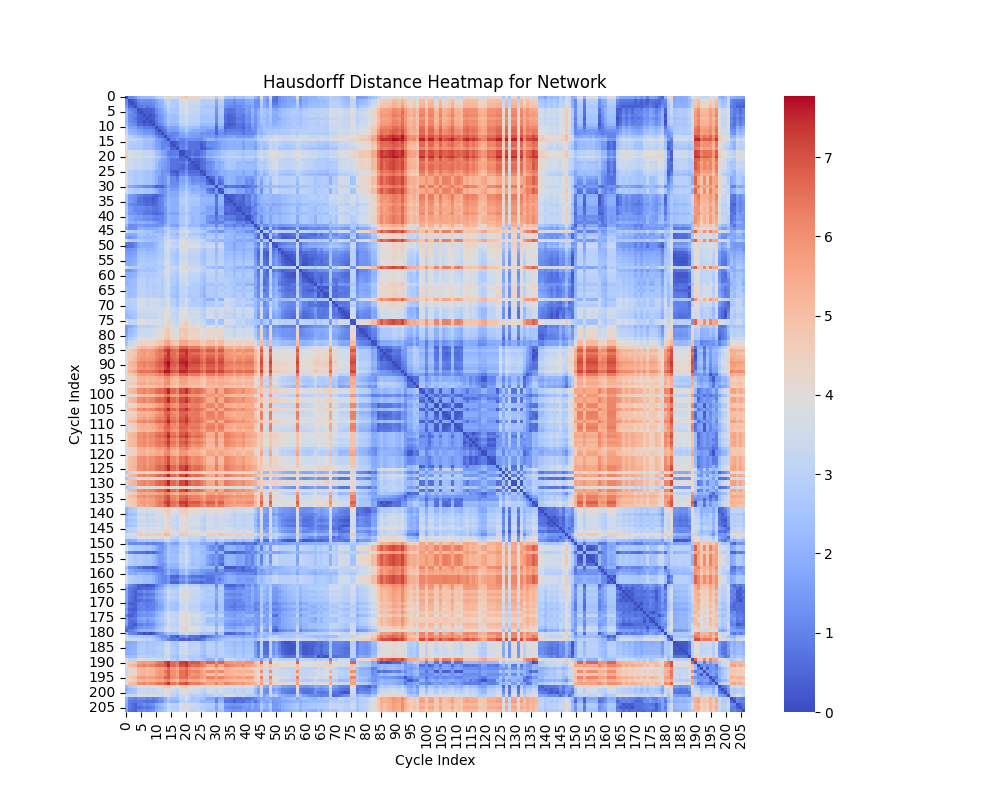
Comparison of Metrics
- Fréchet Distance: Sensitive to the ordering of points along the curves, making it suitable for comparing trajectories or continuous shapes.
- Hausdorff Distance: Ignores the order of points and focuses on the maximum deviation between sets, making it useful for analyzing shape coverage.
Both metrics complement each other in analyzing the geometric properties of cycles. While the Fréchet distance emphasizes trajectory similarity, the Hausdorff distance focuses on the extent of shape overlap.
Clustering
Features Used for Clustering
For each cycle in the networks, the following features are extracted:
- Length: Total length of the cycle, calculated as the sum of the lengths of all edges in the cycle.
- Area: Enclosed area of the cycle, approximated using the Shoelace formula.
- Compactness: Ratio of the area to the square of the perimeter (area/perimeter\(^2\)).
- Centroid: The geometric center of the cycle, defined as the mean of the x- and y-coordinates of all points in the cycle.
Principal Component Analysis (PCA)
PCA is used for dimensionality reduction by projecting high-dimensional data onto a lower-dimensional subspace while preserving as much variance as possible. The original features (length, area, compactness, centroid) are normalized and reduced to two dimensions using PCA. The first two principal components capture the maximum variance in the data, allowing clustering methods to operate in a simplified feature space.
- Interpretation: The axes in the PCA-reduced space represent linear combinations of the original features. Clusters in this space indicate groups of cycles with similar characteristics.
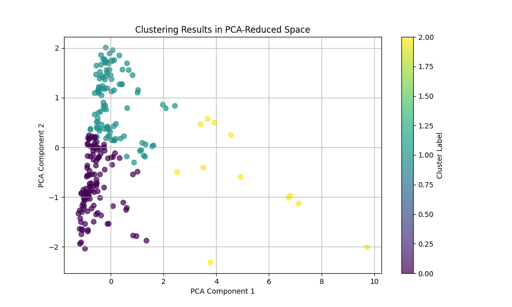
Feature Transformation and Dimensionality Reduction in Shape Analysis
In analyzing geometric properties of cycles in networks, high-dimensional feature spaces often obscure relationships between cycles. This section describes the use of feature engineering and nonlinear dimensionality reduction techniques (t-SNE and UMAP) to uncover hidden patterns, simplify visualization, and enhance interpretability. The outputs are 2D visualizations that highlight structural and functional groupings within the data. The following composite features were derived:
- Area-to-Length Ratio: Computed as $ $. This feature differentiates between compact cycles (high ratio) and elongated cycles (low ratio).
- Normalized Compactness: Computed as $ $. This feature accounts for the relative efficiency of cycles in enclosing their area.
Dimensionality Reduction
Nonlinear dimensionality reduction methods project high-dimensional data into a lower-dimensional space while preserving specific structural properties.
t-SNE (t-Distributed Stochastic Neighbor Embedding)
t-SNE minimizes the divergence between probability distributions over pairwise distances in high-dimensional and low-dimensional spaces. It focuses on preserving local structures (relationships between nearby points) and is particularly effective at uncovering clusters. The key parameters are Perplexity: Controls the balance between local and global structure (default: 30), and Output Dimension: Reduced to 2D for visualization.
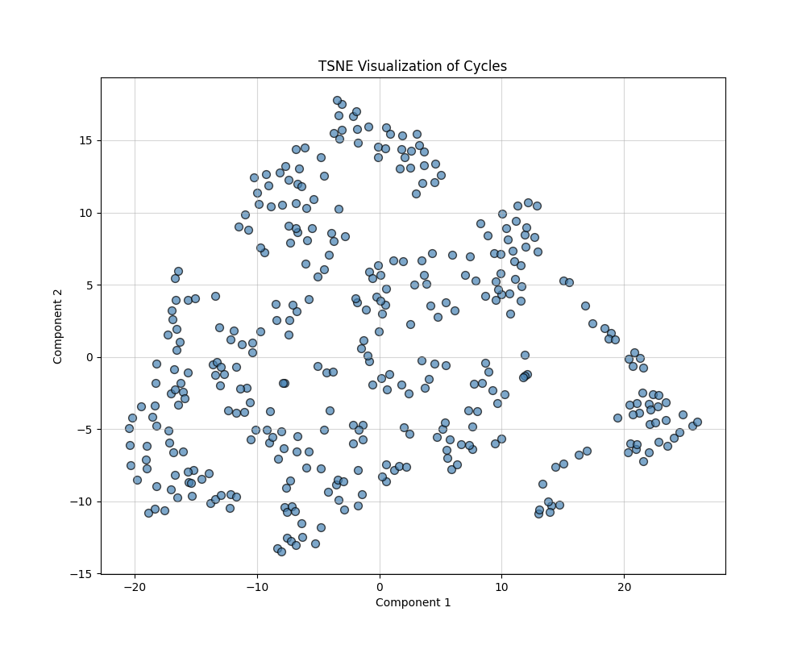
UMAP (Uniform Manifold Approximation and Projection)
UMAP approximates the high-dimensional data manifold and optimally preserves both local and global structures. It provides more interpretable embeddings with smooth transitions between clusters. The key parameters are Number of Neighbors: Defines the size of the local neighborhood considered for embedding (default: 15), and Output Dimension: Reduced to 2D for visualization.
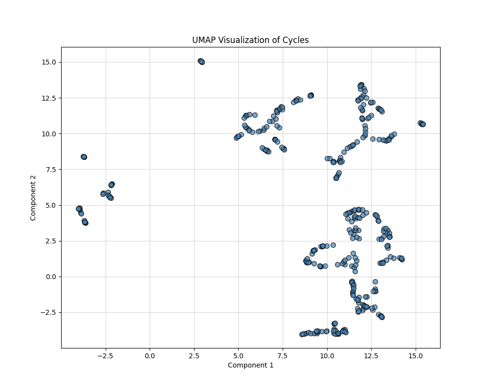
Conclusion
We used a stochastic process (Branching Annihilating Random Walker) to generate some random networks (that resembes the vascular networks). Then we translated this structure to a networkX data frame for easier processing. We extracted the cycle basis for the cycle space of the graph and using the symmetric difference operation we generated new cycles (of different scales). Then performed different statistical and geometrical analysis on the shape of the loops in the graph. Also we calculated different features for the graph and used dimnsionality reduction methods to see if we can observe any structures (clusters) in low dimension.
Appendix
For a graph, the Laplacian matrix contains the information on the in/out flow of stuff into the nodes.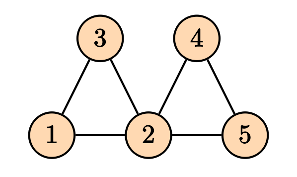
Then the Laplacian matrix is given by \[ D = \begin{pmatrix} 2 & 0 & 0 & 0 & 0 \\ 0 & 4 & 0 & 0 & 0 \\ 0 & 0 & 2 & 0 & 0 \\ 0 & 0 & 0 & 2 & 0 \\ 0 & 0 & 0 & 0 & 2 \end{pmatrix}, \] and the adjacency matrix is given by \[ A = \begin{pmatrix} 0 & 1 & 1 & 0 & 0 \\ 1 & 0 & 1 & 1 & 1 \\ 1 & 1 & 0 & 0 & 0 \\ 0 & 1 & 0 & 0 & 1 \\ 0 & 1 & 0 & 1 & 0 \end{pmatrix}, \] and the Laplacian matrix is given by \[ L = D -A = \begin{pmatrix} 2 & -1 & -1 & 0 & 0 \\ -1 & 4 & -1 & -1 & -1 \\ -1 & -1 & 2 & 0 & 0 \\ 0 & -1 & 0 & 2 & -1 \\ 0 & -1 & 0 & -1 & 2 \end{pmatrix}. \] It is straight forward to generalize the notion of Laplacian matrix to the weighed graphs, where the degree matrix $ D $, the diagonal entries will be the sum of all weights of the edges connected to that node, and for the adjacency matrix, instead of zeros and ones, we will have the weights of the connections..
There is also another way of finding the Laplacian matrix by using the notion of incidence matrix. To do so, we first need to make our graph to be directed. Any combination of the direction on the edges will do the job and will yield in a correct answer. For instance, consider the following directed graph
For a graph, the Laplacian matrix contains the information on the in/out flow of stuff into the nodes.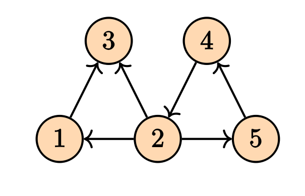
Its incidence matrix will be \[ M = \begin{pmatrix} -1 & 1 & 0 & 0 & 0 & 0 \\ 0 & -1 & 1 & -1 & 0 & -1 \\ 1 & 0 & -1 & 0 & 0 & 0 \\ 0 & 0 & 0 & 1 & 1 & 0 \\ 0 & 0 & 0 & 0 & -1 & 1 \\ \end{pmatrix} \] The Laplacian matrix can be written as \[ \mathcal{L} = M M^T. \] Note that in the case of the weighed graphs, we will have \[ \mathcal{L} = M W M^T \tag{1}\] where $ W $ is a diagonal matrix containing the weights. These computations can be done easily on the NetworkX.
The incidence matrix is also very useful in calculating the pressure difference between nodes of a particular edge. Let \(\Delta = M^T\). Then given the vector \(P\) that contains the pressures on the vertices, then the pressure difference on the edges will be given by \(\Delta P\), where \(\Delta\) is the transpose of the incidence matrix. This comes in handy when we want to calculate the flow of the edges which will be given by \[ \bf{Q} = \bf{C} L^{-1} \bf{\Delta} \bf{P}, \tag{2} \] where $ C $ is a diagonal matrix of the conductance of the edges, \(L\) is the diagonal matrix of the ``length’’ of each edge, \(\Delta\) is the transpose of the incidence matrix, and \(P\) is the pressure on the nodes. \(Q\) is the flow of the edges. In this particular example we are assuming that the relation between flow and the pressure difference is \(Q_e = C_e (p_i - p_j)/L\). But we can have many other choices.
Knowing the sources and sinks on the nodes, the pressure can be determined by the Kirchhoff law \[ \mathcal{L} \bf{P} = \bf{q}, \] where the vector $ q $ is the sources and the sinks values for each node. This is the same as solving the . This can also be written in terms of the flow, i.e. \[ \Delta^T \bf{Q} = \bf{q}. \] By $ (2) $ we can write \[ (\bf{\Delta}^T \bf{C}\bf{L}^{-1}\Delta) \bf{P} = \bf{q}. \] Since $ = M^T $, the expression inside the parentheses is clearly Equation (1).
Similar to the Poisson equation on the graph which is equivalent Kirchhoff’s law, we can solve other types of heat and wave equations on the graph as well. The Laplacian matrix play a key role. \[ \frac{\partial p}{\partial t} = - \mathcal{L} p + q, \] for the heat equation, and \[ \frac{\partial^2 p}{\partial t^2} = -\mathcal{L}p + q, \] for the wave equation.